Will switching to an Instagram business profile be beneficial for your brand? If you want to grow your account, the answer is yes!
There are over 25 million business profiles on the platform. However, some brands are hesitant to make the switch for several reasons:
- How it might affect their profile
- The risk of dropping engagement rate
- Growing competition
However, there is plenty of evidence suggesting that switching to an Instagram business account is beneficial.
Credit: For Love and Lemons via @forloveandlemons
For one, business profile users get access to a plethora of advanced features. This includes:
- Instagram insights
- Promoted posts
- Ability to schedule and automatically publish posts.
Here’s a run-down of the best business profile features. Plus a list of the best tools to manage Instagram profile.
But First, Switch To An Instagram Business Profile
Log in to your Instagram account and tap settings.
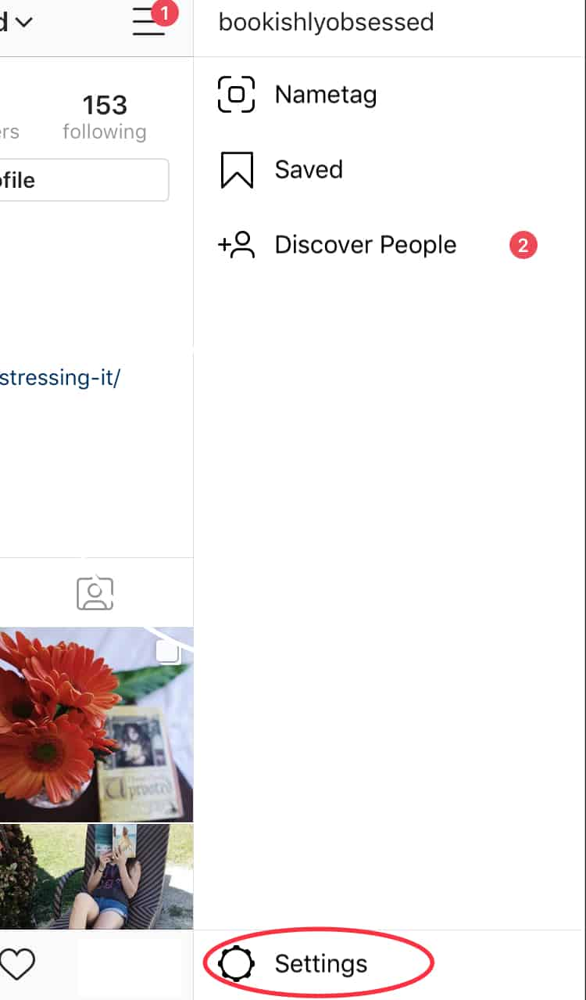
Tap “Switch to Business Profile”

Then you’ll be asked to choose a Category. Tap Next
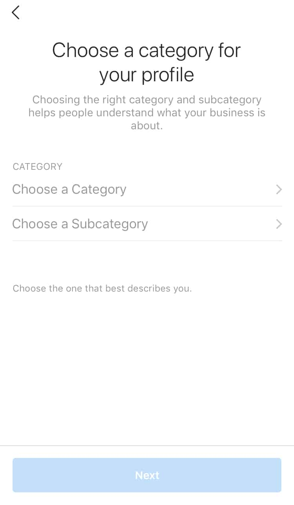
Fill out your contact details.

Once done, you’ll be asked to connect to a Facebook business page.

Remember, you need to have Admin access to a Facebook page.
Congratulations! You’ve successfully switched to Instagram business profile.
Best Instagram Business Profile Features
Access To Instagram Insights
This is the main reason why brands need Instagram for business. Instagram insights provide data on the following:
- Followers
- Profile views
- Impressions and reach
- Audience demographics like gender, age, active hours
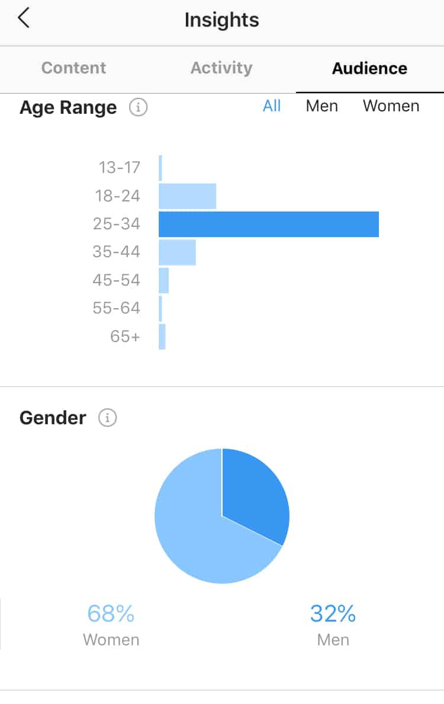
Instagram insights present data in simple charts. This way, you can quickly evaluate your performance. This feature is great, but at some point, you’ll need more data.
For instance, you want to track your top-performing posts. Or you might need competitive analysis. If so, you’ll need additional tools to manage Instagram profile. We’ll discuss these tools later.
But the point is, if you switch to an Instagram business profile, you’ll be able to connect your account to third-party tools. In doing so, you’ll have access to additional reports and analytics.
Run Instagram Ads and Promote Posts
Growing your brand means reaching a wider audience. One of your options is to advertise your products or services on the platform. In doing so, you’ll get your brand message in front of your target market.
With over a billion active users, Instagram is an excellent advertising channel. In fact, brands are enjoying huge success in running Instagram ads.
Take a look at how Oreo used Instagram ads to promote the new Cadbury Coated Oreo!
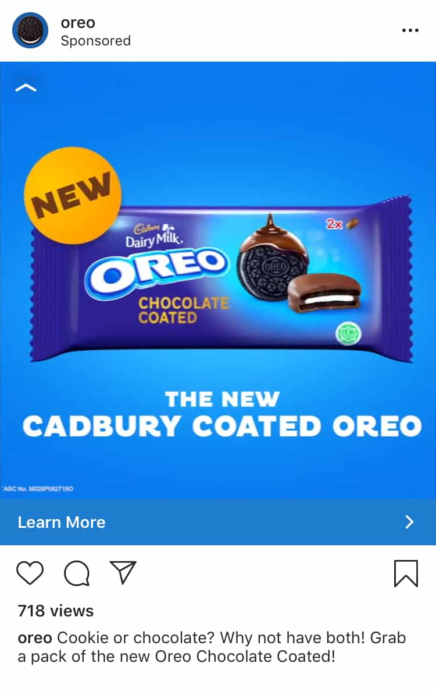
Another option is to promote posts. How does this work?
Think of it like boosting a post on your Facebook Page. Simply choose which photo or video to promote. Tap the Promote button.
Add Contact Details
With an Instagram business profile, you can add contact information. This is different from your website link in the bio section. You can include any or all of the following:
- Direction to your store
- The phone number which opens the phone’s calling function
- An email address which opens the mail app to compose one
- “Message” option so users can DM your account
Add Links To Stories
You’re probably aware that you can’t add clickable links to Instagram posts. You can only do so in your bio section.
However, if you use Instagram for business, you can add a link to Instagram Stories. But here’s the catch: You need to have over 10K followers.
Why do you want to use this feature?
- It helps drive traffic to your website
- If you have an affiliate link, you’ll be able to earn a commission
- You can quickly point your audience to where they need to take action
Take this Instagram Story from @figleavesofficial. They used the Swipe Up feature to direct their audience where they can claim their code.
Credit: Figleaves via @figleavesofficial
Brand Content Approval
With an Instagram business account, you can indicate who can tag you as a branded content partner.
Why is this useful?
For one, you can avoid being falsely listed as endorsing certain accounts.
To set approvals, simply go to your profile settings.
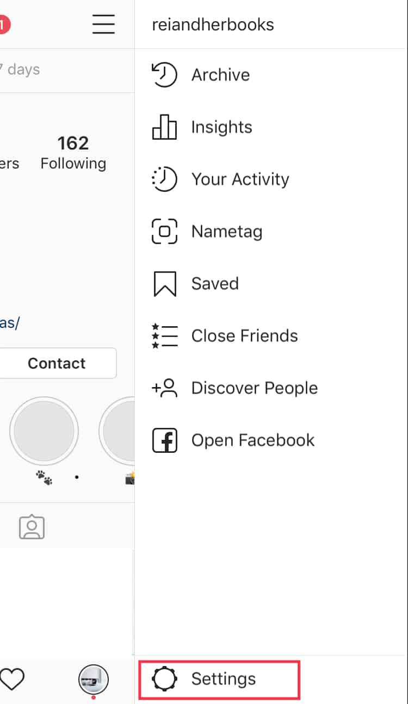
Tap Business Settings.
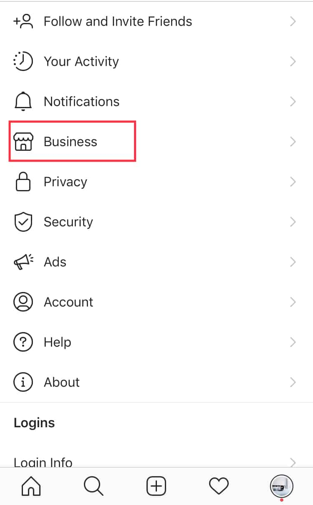
Select Branded Content. Use the toggle button to turn on “Require Approvals”.
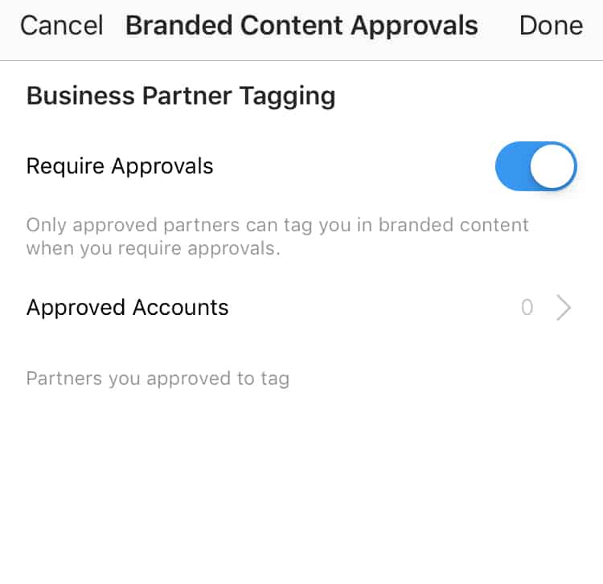
Another option is to create a list of approved accounts. These are the accounts who can tag you in their posts.
Access To Quick Replies
Quick Replies feature is handy for frequently asked questions. With this feature, you can reply to your audience by writing shortcut words.
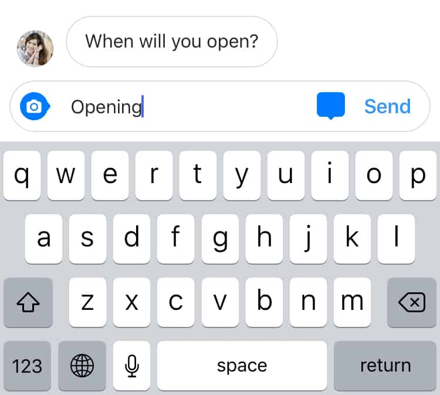
Say, for example, someone asked when you’re doors open for business. All you have to do is type the shortcut word. Then tap the blue message icon at the side.
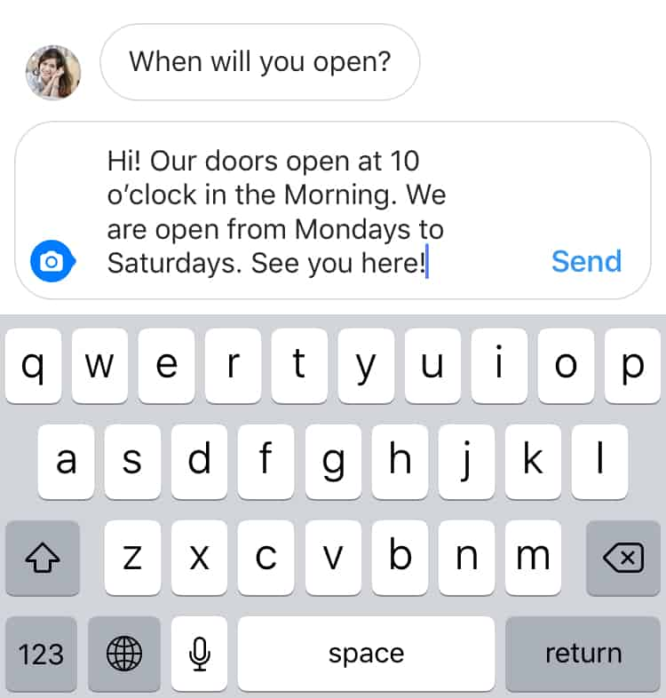
In doing so, you’ll access the quick reply. Then simply tap send!
Here’s how to create a quick reply.
Open your profile settings. Tap the Business setting then select Quick Replies.
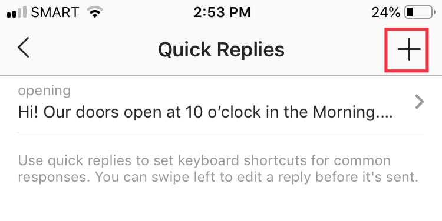
Select the + to create a new quick reply.
Fill in the details.
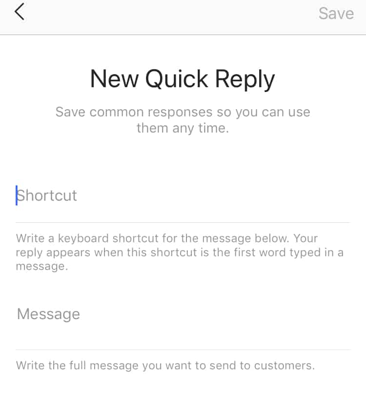
Shopping Tag Feature
One of the most recent features on the platform is shoppable posts. This update changed the e-commerce landscape.
With this feature, an Instagram business profile can add shopping tags to their post. This means they can add links to their product pages.
It takes online shopping to a whole new level. This feature makes it super easy for users to click, engage, and buy the product.
Credit: Wholesome Culture via @wholesomeculture
These are just some of the best business profile features. But one thing’s for sure, having a business account means potentially being first to try out new Instagram features.
Instagram is always developing new ones. And before they roll out new updates to other users, they usually test it with a smaller group- usually business account holders.
Top Tools To Manage Instagram For Business
1. Hire An Account Manager via Upleap
Running an Instagram for business can be a real headache. If you want to grow your account but simply don’t have time, why not hire an account manager?
Upleap is one of the best tools in your arsenal. They have a team of amazing account managers that can supercharge your Instagram business account.

Credit: Upleap via upleap.com
How Does It Work?
First, sign up for free. This Instagram tool offers a 3-day free trial, no credit card required! Once signed up, you’ll be asked a few questions then get started!
Credit: Upleap via upleap.com
Next, you’ll be connected to a dedicated account manager. They will help manage Instagram profile by engaging with another account. In doing so, they’ll
- Pick up real, organic followers.
- Boost your follower count
- Improve your brand presence on the platform.
Of course, you need to inform them what type of followers you’d like.
It’s a hassle-free way to manage Instagram profile. No need to spend hours liking or leaving comments on other people’s content. Let your dedicated account manager do that on your behalf.
What else can Upleap do for you?
Boost Engagement: They will like and leave comments on other accounts. In doing so, they’ll organically boost engagement on your content.
Smart Targeting: Your dedicated account manager helps you identify your target audience on the platform. They will then target users that fit your audience profile.
Dedicated Support: Aside from your designated account manager, they also have an awesome support team. They are ready to help anytime.
2. Target The Right Followers using Kenji.ai
One of the best practices for growing your Instagram for business is to define your target audience. Think of who’s going to see your content.
The key is understanding your audience. Here are a few quick tips:
- Who buys your products or services?
- Check the analytics of your other social media accounts. Who follows you there?
- Do some competitor research
Kenji is a great tool that helps you find Instagram followers you’d like. It is powered by artificial intelligence.

Credit: Kenji via kenji.ai
But don’t fret! It’s super easy to set up. In fact, all you have to do is sign up for free.
Then add your Instagram business account to your dashboard. Lastly, add hashtags and use their HyperTarget feature. In doing so, you’ll get the right Instagram followers.
Credit: Kenji via kenji.ai
That’s it! All you have to do is watch Kenji start its magic.
Here are some of its features:
Hashtag Targeting: Find relevant accounts in your niche based on the hashtags you listed.
HyerTarget AI: List down accounts that are similar to yours. Kenji will then target their followers.
Location Targets: You also have the option to target followers based on their location.
3. Manage Instagram Profile with Later
Consistency and frequency are essential in Instagram for business. By posting consistently, your audience will know what to expect from your brand. Additionally, keeping a schedule ensures that there are no lulls or long stretches without updates.
Credit: Later via later.com
One of the best tools to manage Instagram profile is Later. With this tool, you can:
Visually Plan Your Feed: Use their user-friendly interface where you can simply drag and drop photos and videos. Create a brand aesthetic or plan your color palette.
Schedule Your Posts: Never miss a day with Later’s quick schedule and auto-publish features.
- Auto publish allows you to schedule a single content post to Instagram. No push notification required!
- Quick Schedule allows you to plan weekly time slots. To use, simply drag and drop content to schedule.
Credit: Later via later.com
Later not only manage Instagram profile. This tool is also super helpful in getting more followers and boosting engagement.
How? They have a comprehensive analytics feature. With it, you can analyze the best time to post. Additionally, you can also track your likes, followers, and clicks.
But that’s not all! With this tool, you can also:
- Automatically calculate your engagement rate
- Easily compare your content and see which posts and Stories are performing well
- Rank content by impression, reach, reply count, and completion rate
4. Plan. Collaborate, and Publish Content with Buffer
When working together with a team, Buffer is one of the best Instagram tools. With this tool, you can connect up to 25 social accounts. Plus you can invite 5 additional users.
You can plan, schedule, and publish content using a single dashboard. Lastly, you’ll also receive a full history report and engagement metrics.

Credit: Buffer website
Here are some of its features:
Publish
- Create drafts, get feedback, and revise content as a team.
- You and your team can review and approve posts before publishing.
- Assign access and permissions to particular team members
Reply
- Shared team inbox to easily reply to conversations and support requests
- Collision detection feature helps avoid duplicate responses.
- Internal notes allow you to leave a note for team members.
Analyze
- Understand performance level through in-depth insights
- Track key engagement metrics
- Determine how well each post is performing. This includes Stories and hashtags.
- Make sure that you are reaching your target audience
- Sort each post by most popular, most likes, and most comments.
- Select custom timeframe or choose presets between 7, 30, and 90 days.
It’s crucial to understand what works on Instagram. Although Instagram business profile has Insights, it’s still worth looking into Buffer’s analytics feature.
5. Communicate With Your Audience Using IG:DM
Instagram’s website is very restrictive. Users can’t upload photos or watch Stories. In fact, you can’t even use Instagram’s Direct Messaging feature on the browser.
This could affect brands and business. What if you need to quickly respond to customer inquiries?
Thankfully, there are third-party tools like IG:DM which allows you to access Instagram features on your computer.
IG:DM, also known as Instagram Desktop manager, is a tool used for Instagram chats. This tool supports all platforms, including macOS, Linux, and Windows.
How does it work?
Simply download IG:DM from their official website. Then complete the installation process. As soon as set up is done, you’ll be directed to a window where you can see a search tab.
Credit: IG:DM website
Here are some of its key features:
- Search for user accounts and start chatting
- View and quote chat messages
- Provide a list of users you’ve followed but haven’t followed you back
Is Instagram Business Profile For You?
It depends on your goals. If you want to use your Instagram for business and brand marketing, then switching to a business profile is highly recommended.
Aside from unlocking unique Instagram business profile features, you also have the option to use third-party tools. In doing so, you can manage Instagram profile more seamlessly.
Just make the switch and don’t worry! You can always switch back if you think it’s not for you.


9 Comments